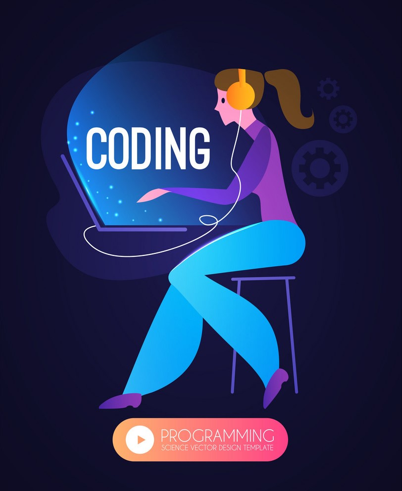

This is Cool Platform for Code Busters. Those who love to code can code all day long.
Computer programming is the process of designing and building an executable computer program to accomplish a specific computing result or to perform a specific task. Programming involves tasks such as: analysis, generating algorithms, profiling algorithms' accuracy and resource consumption, and the implementation of algorithms in a chosen programming language.
